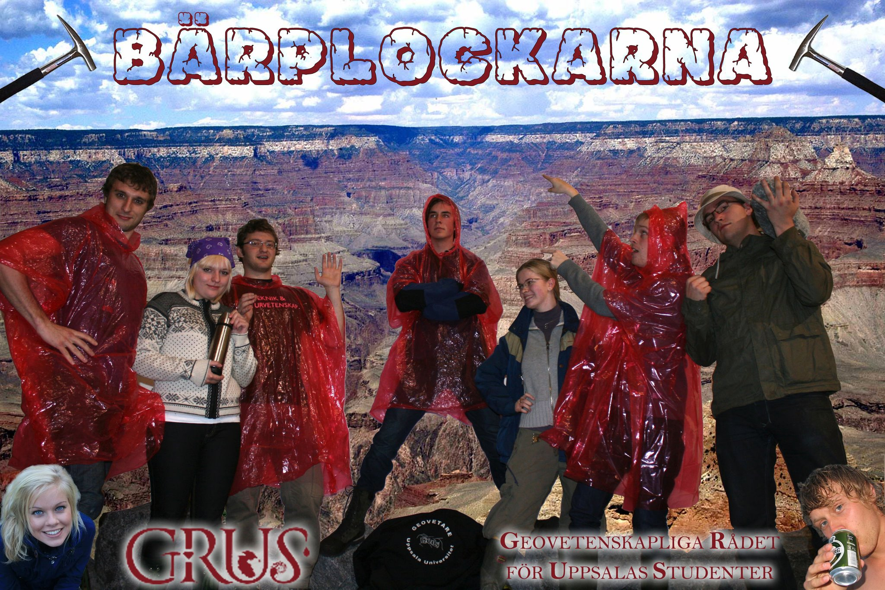

Aktiviteter!
Vi försöker hålla en rutin på ett möte var tredje vecka. Mötena annonseras ut genom vår Facebook grupp, lappar på Geocentrum samt ryktesvägen. ;) Men självfallet även på hemsidan!
På denna sida hittar du datum samt protokoll från möten som GRUS har haft under året, dvs vårtermin och hösttermin. För att ta del av protokoll från äldre möten hittar du under fliken grus -> tidigare möten. Det samma gäller för aktiviteter som är äldre än ett år, dvs allt äldre än 2012 hittar du under fliken historik
Aktiviteter som under året
Maj
Grillkväll i maj med GeoS!
Den 28:e maj är det dags för GRUS grillkväll.
- Plats: Gräsmattan bakom Geocentrum
- Tid: 15 dk
- Pris: 40 kr
- Vad erbjuds?: För pengarna får du en hamburgare med coleslaw eller nachos
November
Sektionskampen 2011
Efter en varmare september och oktober än vanligt var det dags för november att komma in på scenen och den förde med sig kylan som vi hade gått miste om. Och än kallare väder är på väg, den saken är klar. Vad som inte är klart dock är vilka sektioner som kommer ta sig genom den kommande hårda vintern helskinnade eller alls för den delen.
Medan de mer tekniskt- och ingengörs-inriktade sektionerna kommer troligtvis att försöka hitta en lösning som ligger mer i linje med deras respektive utbildningar, kommer de två naturvetenskapliga utbildningarna (BÄR och GRUS) att förlita sig på det naturliga urvalet.
Vilka kommer det naturliga urvalet att gynna egentligen? Den frågan ställdes till en slumpmässigt vald geovetare på stan och följande svar fick vi: (svårt att få tag på geovetare då de inte är så många och oftast gömmer sig i grottor dagtid):
"GRUS borde komma ut som segrare eftersom de vet hur man anpassar sig till en ny utmaning genom att ha studerat mängder med fossil."Svarar en äldre geovetarstuderande som vill vara anonym.

För att förbereda sig inför sektionskampen 2011 på allvar behövde Bärplockarna™ ta sig till en helig plats för att finna fler stenar att studera, stenar som kan ge dem svaren de söker för att vinna sektionskampen 2011!
Men det räcker inte med att GRUS skickar iväg en tapper skara geovetare för att kämpa i dess namn, nej, hela GRUS måste komma till Uthgård på måndag kl. 17:dk för att stötta laget. GRUS behöver dig!
Här följer en lista på GRUS lagmedlemmar
- Kalle Kjellander - Lagledare!
- Theresa Lundgren
- Olle Risby
- Franz Åberg
- Johannes Ganneby
- Isabelle Åberg
- Jakob Papirov
- Lena Källsten
- Johannes Petrone
December
Julfesten
Nästa stora event är Julfesten som kommer att äga rum 2011-12-03 på Geocentrum!
Möten
Vårterminen
- 2011-05-16 Ännu ej lagt till
- 2011-05-03 Ännu ej lagt till
- 2011-04-04
- 2011-03-01
- 2011-02-09